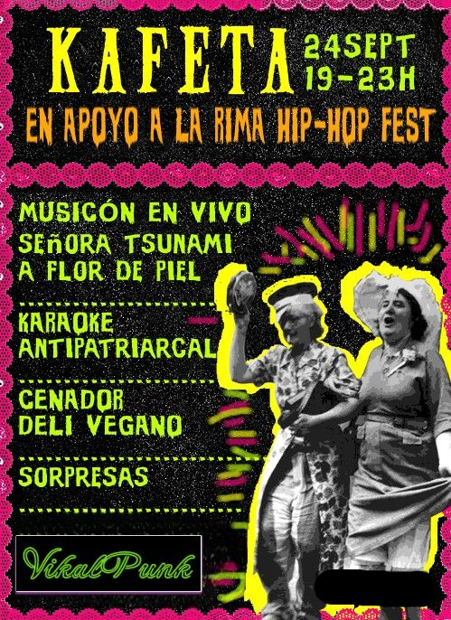
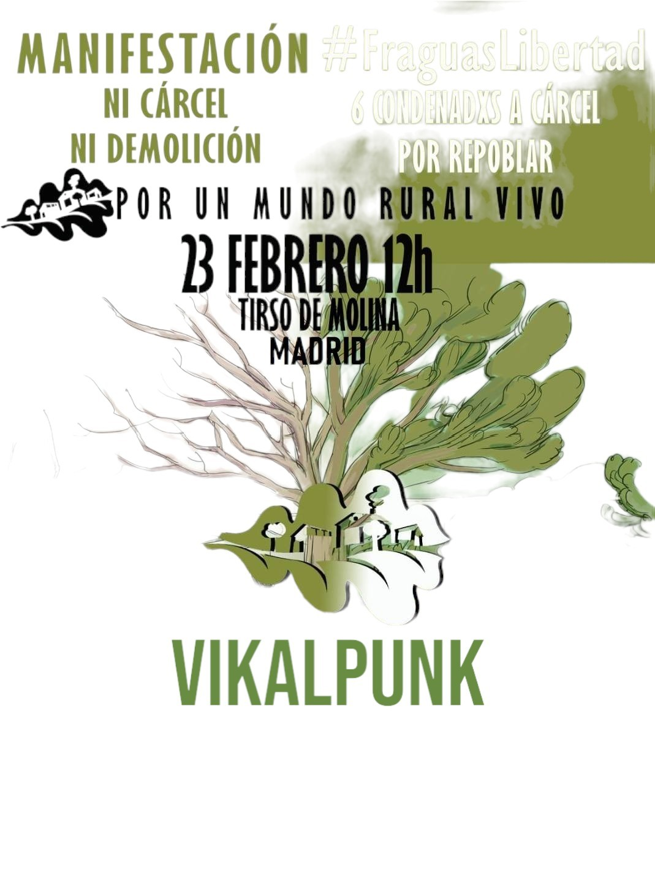
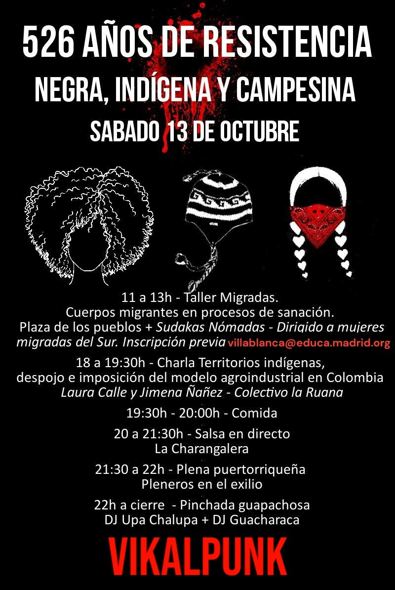
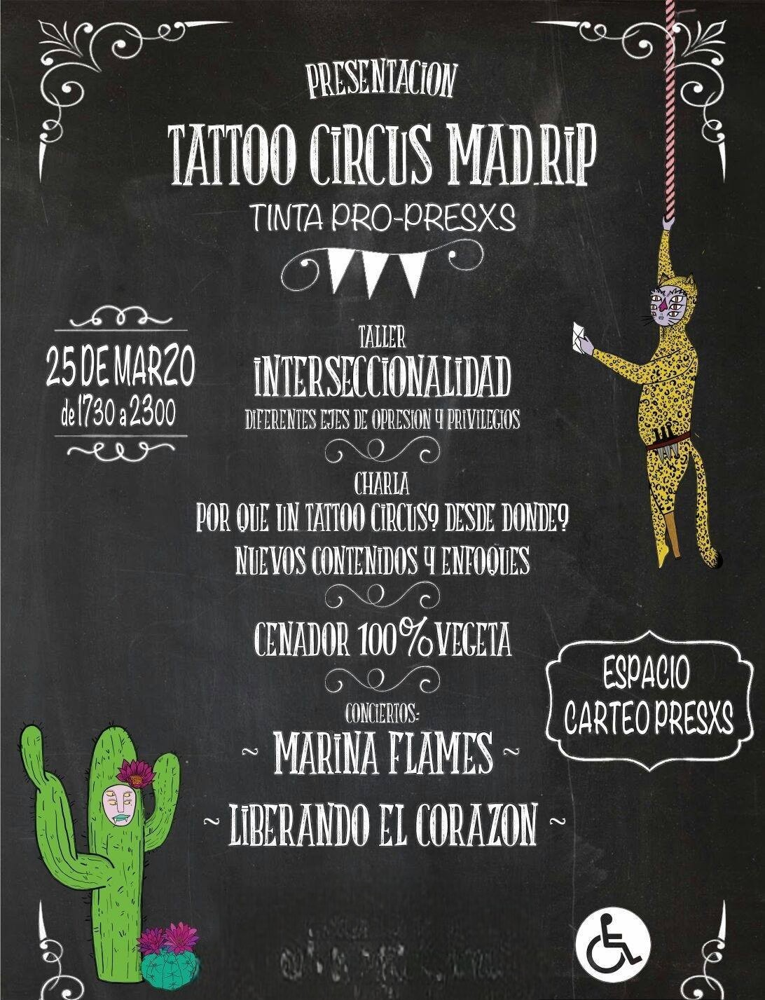

| Autogestival Este grupo es uno de los más famosos que hay en España. Se unieron en 1987 en Plasencia por el gran cantante Robe Iniesta, muy conocido a día de hoy y uno de los pocos que sigue haciendo música por su cuenta. Al principio mezclaban canciones de rock con canciones de punk, aunque luego se fueron haciendo más al rock |

|
| Kafeta Eskorbuto fue un grupo español de punk originario de Santurce (Vizcaya). Surgieron en 1980 y han sido uno de las bandas más influyentes en el panorama del punk en español. Posteriormente a su fundación, y coincidiendo con el fenómeno contemporáneo del llamado rock radical vasco. A día de hoy no queda ninguno con vida. |
 |
| Manifestacion Que mejor momento para presentar a la banda Tensö. Es un grupo formado en Canarias y podríamos decir que estamos ante los sucesores de Eskorbuto y... ¡qué alegría! Este grupo está compuesto por Elio, Hernan y JoC y se dieron a conocer en 2021. A día de hoy están dando bastantes conciertos por toda españa, no tienen pérdida ninguna. |
 |
| Charla 526 años Seguimos hablando de grupos Canarios y ahora os presentamos un grupo de chicas punkis. Empezaron un poco antes, aunque también fue en 2021. El grupo está compuesto por 3 chicas, una bajista, una guitarrista y cantante y la última que toca la batería. Este 2024 vienen a Madrid para celebrar el 8M de la mejor manera posible. Ver aquí actividad. |
 |
| Taller de fotografía JR comienza a finales del 2000 con una guitarra y un amplificador prestados muy básicos, equipo con el que consigue plasmar sus pensamientos a través del punk, convirtiéndose para él en un estilo de vida. En una ciudad periférica y entonces decadente de las afueras de Barcelona, no tuvo mucha dificultad para componer temas que para él eran el pan nuestro de cada dìa. Cuando apenas supo tocar algunas notas con la guitarra, empezó a asaltar en solitario los escenarios que se prestaron para ello. Era ya el inicio de ARPAVIEJAS. Según pasó el tiempo Empezaron a ser más integrantes en la banda y fueron yendo ciudad por ciudad cantando sus canciones hasta día de hoy que siguen activos. |

|
| Tattoo A mediados de Junio del 1990 se crea en el barrio de la Trinidad de Barcelona, un barrio literalmente rodeado de autopistas, el grupo musical Agua Bendita, con un único propósito: pasarlo bien. Al principio tocan un estilo basado en el Rock radical, el Ska y el Punk.en 1998 aparece "Africa" su trabajo estilísticamente más trabajado y en el que no abandonan en absoluto su compromiso social, pero entra en juego otra ficha: sus letras se cargan de imaginación y creatividad. |
 |